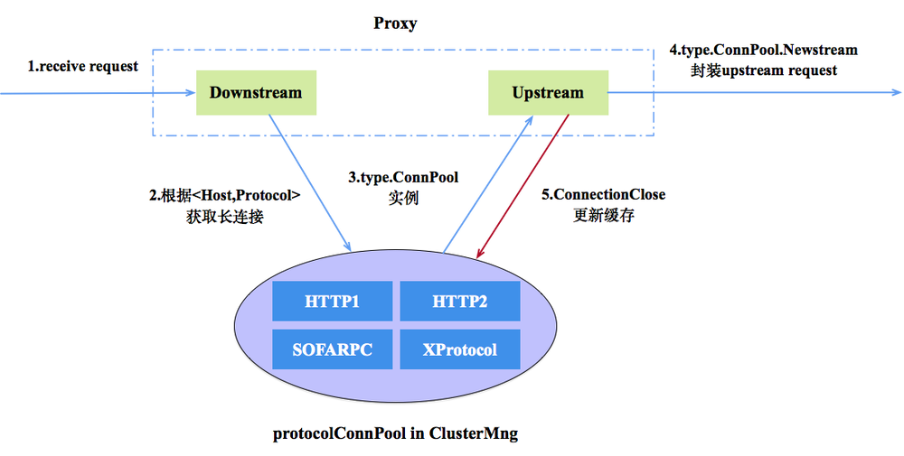
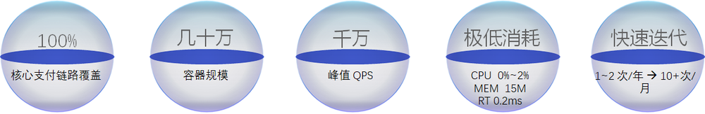
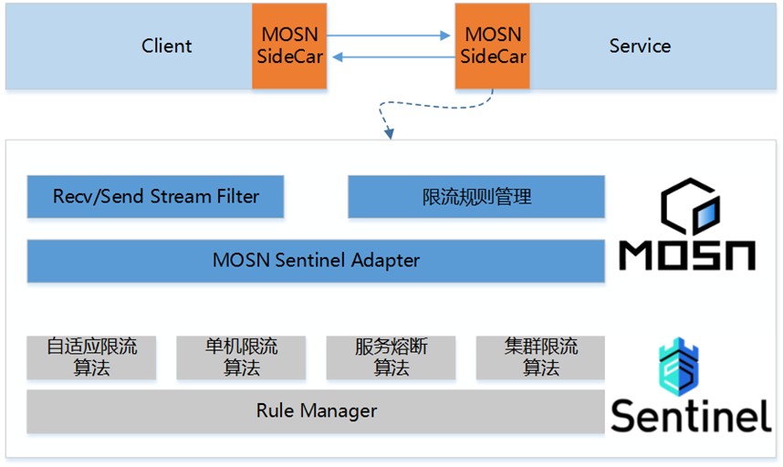

本文是 2020 年 8 月 15 号在深圳 GIAC（GLOBAL INTERNET ARCHITECTURE CONFERENCE）全球互联网架构大会，由宋净超（Jimmy Song）出品的云原生专场中的现场实录。

王发康（毅松）蚂蚁集团可信原生技术部 技术专家，专注于高性能网络服务器研发，是 MOSN、Tengine 开源项目核心成员，目前关注云原生 Service Mesh、Nginx、Istio 等相关领域，喜欢开源，乐于分享，GItHub：https://github.com/wangfakang 。
以下是分享全文。
前言
MOSN 在蚂蚁集团的 Service Mesh 大规模落地后，通过对接 UDPA 打造为 Istio 的数据面之一，本文就其在演进过程中遇到的问题及思考进行展开。对接 UDPA，实现 Istio 融合，并增强 MOSN 服务治理及流量控制能力对接云原生周边组件，实现 MOSN 开箱即用。
大家下午好，我叫王发康，来自蚂蚁集团可信云原生应用网络团队，之前几年一直从事南北向网关（接入层）的开发和维护，说来也是和流量有着别样的渊缘，现在主要做东西向的流量网关（Service Mesh）开发和设计。今天演讲的主题是《云原生网络代理 MOSN 的进化之路》，主要从如下几点介绍：
- MOSN 介绍
- 云原生演进
- 总结与展望
MOSN 介绍
接下来，就 MOSN 的诞生背景、发展历程、MOSN 具备的功能和架构以及内部的落地情况这几个维度介绍下 MOSN。
MOSN 诞生背景
随着云计算、物联网等技术迅速发展，也促使着微服务的架构一直在进化，其演进过程通常经历了如下四个阶段：
单体：一般起始阶段业务很简单，流量也不大，所有的处理都可以在一个服务中完成；
分布式：随着业务操作的多样化以及流量的日益增长，不得不按照服务维度进行拆分，这样相同的服务资源消耗可对等，方便容量评估及管理；
微服务：随着服务的拆分粒度越来越细，其服务的数量一直在增加，由此出现各种微服务治理的需求（限流、鉴权、路由等），于是便出现各种治理组件并以 SDK 插件的方式集成到不同应用中；
Service Mesh：伴随着服务治理的 SDK 种类、版本、重复等一系列问题，于是把 SDK 的能力剥离到 Sidecar，和业务进行解耦，从而实现业务和中间件能力的并行迭代；
业务痛点
- 多语言，中间件组件开发适配成本高
- SDK 升级困难
- 服务治理能力弱
- 技术不通用，无法复用
业界解决方案
- Envoy (C++)
- Linkerd (活跃度较低)
- NginxMesh (活跃度低)
综合以上业务痛点以及业界现有方案的评估，于是 MOSN 就诞生了。MOSN（Modular Open Smart Network）是用 GoLang 编写的网络代理服务器。作为 Sidecar、API Gateway、云原生 Ingress、Layer 4 或 Layer 7 负载均衡器等场景构建的。随着时间的推移，我们添加了额外的功能，例如多协议框架，多进程插件机制，DSL 以及对 xDS API 等的支持，支持 xDS 意味着我们现在可以将 MOSN 用作 Istio 的数据平面。
MOSN 发展历程
从 2017 年底开始 Service Mesh 技术调研，2018 年 3 月份 MOSN 雏形问世并进行了小规模试点，秉着让更多的用户能够享受这一技术红利的思路，于是 2018 年 6 月正式开源 MOSN。2019 年 618 进行了规模化落地，并在同年的双 11 大促达到了核心支付链路的全覆盖。在通过大规模验证后，MOSN 社区开始在其标准化以及生态方面进行发展和演进。

MOSN 功能视图
MOSN 作为一个通用的数据转发平面，提供多协议卸载、动态服务发现、服务治理（Trace、限流、重试、重写、超时控制等）、丰富的负载均衡算法等功能，可用于 Sidecar、API Gateway、云原生 Ingress、Layer 4 或 Layer 7 负载均衡器等场景。

MOSN 架构解析
MOSN 采用的是分层的体系结构，其系统分为 NET/IO、Protocol、Stream、Proxy 四层：

- NET/IO 作为网络层，监测连接和数据包的到来，同时作为 listener filter 和 network filter 的挂载点;
- Protocol 作为多协议引擎层，对数据包进行检测，并使用对应协议做 decode/encode 处理;
- Stream 对 decode 的数据包做二次封装为 stream，作为 stream filter 的挂载点;
- Proxy 作为 MOSN 的转发框架，对封装的 stream 做 proxy 处理;
其中，每一层通过工厂设计模式向外暴露其接口，方便用户灵活地注册自身的需求。通过协程池的方式使得用户以同步的编码风格实现异步功能特性。通过区分协程类型，MOSN 实现了 read 和 proxy worker 两大类协程，read 协程主要是处理网络的读取及协议解析，proxy worker 协程用来完成读取后数据的加工、路由、转发等。其架构如下图所示：
MOSN 为了降低 Runtime GC 带来的卡顿，自身做了内存池的封装方便多种对象高效地复用，另外为了提升服务网格之间的建连性能还设计了多种协议的连接池从而方便地实现连接复用及管理。 在连接管理方面，MOSN 设计了多协议连接池， 当 Proxy 模块在 Downstream 收到 Request 的时候，在经过路由、负载均衡等模块处理获取到 Upstream Host 以及对应的转发协议时，通过 Cluster Manager 获取对应协议的连接池 ，如果连接池不存在则创建并加入缓存中，之后在长连接上创建 Stream，并发送数据，如下图所示：

在内存管理方面，MOSN 在 sync.Pool 之上封装了一层资源对的注册管理模块，可以方便的扩展各种类型的对象进行复用和管理。其中 bpool 是用来存储各类对象的构建方法，vpool 用来存放 bpool 中各个实例对象具体的值。运行时通过 bpool 里保存的构建方法来创建对应的对象通过 index 关联记录到 vpool 中，使用完后通过 sync.Pool 进行空闲对象的管理达到复用，如下图所示：

MOSN 落地情况
服务在做了 Mesh 化后，有人可能会质疑，增加一跳 Sidecar 转发是否会导致性能下降，其实不然，在蚂蚁的部分业务场景中，部分业务上了 Mesh 后，其 CPU 消耗还比之前低了，原因是之前的一些通用 SDK 能力都下沉到 Sidecar 中，并统一做了一定的优化。另一个好处是，由于 MOSN 使用 GoLang 开发，天然具备其高开发效率，所以也大大的提升了中间件相关能力的研发速度。

MOSN 云原生演进
在 MOSN 大规模落地并通过双 11 大考后，MOSN 也开始在实践的道路上进行标准化演进。并通过和 Istio 社区的合作，MOSN 实现了 xDS 的适配，可方便的实现 Istio 作为 MOSN 的控制面进行服务配置的管理。另一方面，我们也在积极参加 Istio 相关社区，并贡献了一些通用能力及问题修复的 PR。
Could Native 架构
如下图所示，最下面是基础设施层（物理机等），上层进行抽象出 Kubernetes 进行容器资源的调度和管理，再上层就是部署在容器里面的各种服务了，Istio 的能力（服务治理）就在这一层进行发挥的。
Istio 简介
在介绍 Istio 前，先说下它为什么会出现。10 年前，一般应用都是直接部署在物理机上的，但是随着时间的推移，机型一直变化（如 CPU 核数）就出现了机型对等、环境部署以及弹性扩容等一系列问题，于是就出现了 Docker。但是 Docker 涉及到容器编排、调度、管理等问题， Kubernetes 便随之出现。Kubernetes 在容器管理领域的用途是毋庸置疑的，但是其在微服务治理方面存在一些不足，于是 Istio 便专职解决微服务治理的问题而问世。

Istio 弥补了 Kubernetes 在服务治理上的短板，提供服务互连、流量安全、流量控制、可观测性功能。
MOSN 和 Istio
通过 MOSN 社区几个月的努力及推进，MOSN v0.14.0 版本可以使用 Istio 1.5.x 作为云原生控制面，从而方便的进行微服务的治理。如下是 Istio 官方在 2020 年 7 月 28 号发布了在 Istio 中使用 MOSN：另一个数据平面博文，即 Istio 数据平面的另一个选择 —— MOSN。

如下是 MOSN 在 Istio 1.5 版本中的架构图，MOSN 通过 xDS 协议从 Istio 动态的获取各种服务配置，从而实现服务治理的效果。
在 Service Mesh 领域，使用 Istio 作为控制平面已成为主流。Istio 通过 xDS 协议和数据面进行交互，因此，通过在 MOSN 中实现 xDS，我们就可以使用 Istio 作为 MOSN 的控制面。Istio 的第三方数据平面集成可以通过以下三个步骤实现：
- 实现 xDS 协议，对齐数据面相关服务治理能力;
- 使用 Istio 的脚本并设置相关
SIDECAR等参数构建proxyv2镜像; - 通过 istioctl 工具并设置 proxy 相关配置指定具体的数据面;
有了对应的改造方案后，于是我们成立了相关 Working Group ，带领社区的同学一起进行讨论和改造。

除了对 Istio 进行改造（相关能力已经合入 Istio 官方仓库），MOSN 也需要在负载均衡、服务治理及相关框架上做一些适配和增强，其适配列表如下所示：

MOSN 在功能上对齐 Istio 后，就可以使用其进行微服务治理了。在使用前，我们先看看 Istio 中的 VirtualService 等相关策略是如何和 MOSN 进行关联的。如下图所示，在 Istio 中的 VirtualService 做为一个服务的转发描述，其对应到 MOSN 中就是一个 Listener 以及一组对应的路由策略 Routes。

在初步了解 MOSN 如何同 Istio 结合后，我们来看看 MOSN 在 Bookinfo 实例中可以做什么：如下是一个经典的多语言服务使用 Istio 做服务治理，在该场景中，MOSN 不仅独立的作为 Ingress Gateway，还作为 Sidecar。

通过 MOSN 作为 Istio 的数据平面运行 Bookinfo 事例，实现如下服务治理通用能力：
- 按 version路由能力
- 按照权重路由能力
- 按照特定 header路由能力
- 故障注入能力
- 服务熔断自护能力
- 透明劫持能力
- 超时重试机制
- etc
在这里，你可以通过演示教程《MOSN with Istio》来学习 MOSN 如何作为 Istio 的数据面进行服务治理。
开源生态建设
MOSN 在对接完 Istio 的同时，也和周边的开源生态进行了紧密的合作，如 Dubbo、Sentinel、Skywalking 等。
MOSN With Dubbo
MOSN 中提供 Kubernes 和 非 Kubernes 体系下的 Dubbo 服务治理方案。如下图所示，方案 1 是在非 Kubernes 体系下，MOSN 通过集成 dubbo-go 支持服务的 pub/sub，并复用原有的服务注册中心。方案 2 则是在 Kubernes 体系下使用 Istio 进行一步到位的服务治理，MOSN 通过支持 Istio 下的路由策略，实现服务的治理。
MOSN With Sentinel
限流是微服务治理中的一个重要功能， MOSN 通过集成 Sentinel 并复用其底层的限流能力，从而实现单机限流（令牌桶/漏桶结合）、服务熔断保护（依据服务的成功率）、自适应限流（依据机器的负载），同时目前 Istio 的限流规则也没有一个成熟的 API，我们也和 UDPA 进行了一些限流规则的规范讨论。

MOSN With Skywalking
调用依赖以及服务与服务之的调用状态是微服务管理中一个重指标，MOSN 社区通过和 Skywalking 合作，把 Skywalking 的 GoLang SDK 集成到 MOSN 中，从而实现 HTTP 系调用链路拓扑展示、QPS 监控、细粒度 RT 如下图所示，同时该功能也在持续演进，接下来会支持 Dubbo Tracing。
标准化演进
除了开源生态的适配外，MOSN 也在其标准化方面做了一些贡献（如限流、路由的 UDPA 策略提议等）。谷歌在数据面和控制面之间标准化出 UDPA 规范，微软在控制面和应用及工具层面之间标准出 SMI 规范，这所做的一切其实都是围绕“防止锁定，方便用户灵活切换”。

可见“标准”、“规范”的重要性，当然 MOSN 社区也在其相关的标准下做了一些演进和贡献。
-
云原生标准 Sidecar 的打造；
-
标准化参与和建设；
针对第一点，MOSN 社区持续在进行 Istio 能力的对齐工作，包括 Istio 侧多 Sidecar 支持以及 MOSN 侧功能对齐 Istio，控制面方面支持注入 MOSN Sidecar、Pilot-agent 的适配以及 Istio 编译构建的适配、负载均衡算法、流量管理体系、流量检测、服务治理等。
在标准化方面，我们也参与了 UDPA 相关规范讨论，并提出限流通用 API 规范讨论，社区会议讨论组织中。
同时 MOSN 社区也积极地在和 Istio 社区进行沟通以及寻求合作，我们的目标是希望能成为 Istio 官方推荐的 Sidecar 产品，对此我们在 Istio Github 上提了相关 ISSUE，引发了比较大的关注，Istio 官方 Member 成员 @howardjohn 对此问题进行了非常详细的回答和探讨。

综合 MOSN 社区和 Istio 官方的讨论后，MOSN 社区主导并会参与 Istio 中数据面解耦的事情（比如测试集、镜像构建等），这样使得 Istio 更容易集成第三方的数据面，即 MOSN 社区的用户更方便的集成 Istio 使用。对此 MOSN with Istio 适配的 Roadmap 中新增如下事项：
针对第一点，MOSN 社区向 Istio 贡献 PR，并已合入主干，通过该 PR 可以更方便的让 Istio 的 proxyv2 镜像集成其它数据面。

2020 年 7 月 14 号 Istio TOC（Istio 技术委员会）成员 @ShriramRajagopalan 最新回复： “也是支持 Istio 中支持多数据面的方案，而且也建议先把 MOSN 做为实验性第三方数据平面纳入到 Istio 的官方博客中，方便用户来试用”：

经过 MOSN 社区不断的努力，在 7月底，Istio 官方博客正式上线了 在 Istio 中使用 MOSN：另一个数据平面 博文，取到了 Istio 官方的一定认可。
总结及展望
从 Service Mesh 技术调研，到 MOSN 诞生并小规模试点，再到双 11 规模化落地，并走向开源到标准化演进，一路走来实属不易，这个过程中也离不开 MOSN 开源社区开发者和使用者的贡献与支持。
合作伙伴及用户
秉着借力开源，反哺开源的思想，MOSN 社区在众多的合作伙伴的共同努力下，在实践的道路上，一步步的走向标准化。

总结及未来展望
接下来，MOSN 社区不仅会持续兼容适配新版本的 Istio 的功能，而且还将在以下几个方面进行发力：
- 可编程，如支持面向业务层的 DSL，可方便的控制请求的处理流程，另外也会在 WASM 上进行预研；
- Dapr 模式作为微服务运行时，使得面向 MOSN 编程的服务更轻、更小、启动速度更快；
- 被集成，遵循 UDPA 规范，可方便的被 Istio 、 Kuma 集成，另外 MOSN 里面的通用工具链剥离为 package，方便其它 GoLang 项目复用；
- 更多场景 Mesh 化方案支持，Cache Mesh/Message Mesh/Block-chain Mesh 等；
MOSN 是一个开源项目，社区中的任何人都可以使用，参与和改进。我们希望您能加入社区！可以通过这里介绍的几种方式了解 MOSN 正在做的事情并参与其中。
- MOSN 官网 http://mosn.io
- MOSN Github http://github.com/mosn/mosn
- Service Mesh https://www.servicemesher.com
欢迎加入 MOSN 开源交流群